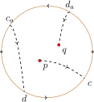
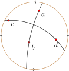

As was the case in hyperbolic geometry, the space in elliptic geometry is derived from \(\mathbb{C}^+\text{,}\) and the group of transformations consists of certain Möbius transformations. We first consider the transformations.
Definition6.2.1
Let \({\cal S}\) consist of all Möbius transformations \(T\) that preserve antipodal points. In other words, \(\cal S\) consists of all Möbius transformations \(T\) with the property that if \(z\) and \(z_a\) are antipodal points in \(\mathbb{C}^+\) then \(T(z)\) and \(T(z_a)\) are antipodal points in \(\mathbb{C}^+\text{.}\)
We leave it to the reader to verify that \(\cal{S}\) actually forms a group. Considering the antipodal point construction in Figure 6.1.11, it seems clear that rotation of \(\mathbb{C}^+\) about the origin should preserve antipodal points. So, these rotations should be in \(\cal S\text{.}\) Let's run through this.
Example6.2.2Rotations about 0 are in \({\cal S}\)
Suppose \(R(z)=e^{i\theta}z\) is a rotation about the origin and \(z\) and \(z_a\) are antipodal points. If \(z = \infty\) or \(0\text{,}\) then rotation about the origin fixes \(z\text{,}\) and it also fixes its antipodal point, so the map \(R\) preserves antipodal points in these cases. Now suppose \(z \neq 0, \infty\text{.}\) Then \(z_a = -\frac{1}{\overline{z}}\text{.}\) Since \(\overline{R(z_a)} = -\frac{e^{-i\theta}}{z}\text{,}\) it follows that
Thus, the image points \(R(z)\) and \(R(z_a)\) are still antipodal points. Rotations about the origin belong to the group \(\cal S\text{.}\)
Now we consider what a typical transformation in \(\cal{S}\) looks like.
Suppose the Möbius transformation \(T\) is in \(\cal{S}\text{,}\) and that \(z\) and \(w\) are antipodal points. Then \(T(z)\cdot \overline{T(w)} = -1\text{.}\) Since \(z\) and \(w\) are antipodal points, \(w = -\frac{1}{\overline{z}}\text{,}\) so \(T(z)\cdot \overline{T(-1/\bar z)} = -1\text{,}\) or
Assume \(T(z) = (az + b)/(cz + d)\text{,}\) and that it has determinant \(ad- bc = 1\text{.}\) (Recall, from Exercise 3.4.4 that we can always write a Möbius transformation in a form with determinant 1, and this form is unique up to sign.) Now,
\begin{align*}
\overline{T(-1/\bar z)} \amp = \overline{\bigg[\frac{-a/\bar z + b}{-c/\bar z + d}\bigg]}\\
\amp =\frac{-\bar{a}/{z} + \bar{b}}{-\bar{c}/z +\bar{d}}\\
\amp =\frac{\bar b z - \bar a}{\bar{d} z - \bar{c}}.
\end{align*}
Substituting into equation (1) of this derivation yields
\begin{equation*}
\frac{az+b}{cz + d} = \frac{-\bar d z + \bar c}{\bar b z - \bar a}.
\end{equation*}
The transformation on the right also has determinant one, so these two transformations are identical up to sign. We can assume that \(d = -\bar a\) and that \(c = \bar b\text{,}\) so that \(T\) may be expressed as follows:
\begin{equation*}
T(z) = \frac{az + b}{\bar b z - \bar a}.
\end{equation*}
We can make this general form look a lot like the general form for a transformation in \({\cal H}\text{.}\) To do so, first multiply each term by \(-1/\bar a\text{,}\) assuming \(a \neq 0\text{.}\) (If \(a = 0\text{,}\) what would the transformation look like?)
where \(e^{i\theta} = -a/\bar{a}\) and \(z_0 = -b/a\text{.}\) Thus, we have derived the following algebraic description of transformations in \(\cal S\text{:}\)
Transformations in \(\cal S\)
Any transformation \(T\) in the group \(\cal S\) has the form
for some angle \(\theta\) and some \(z_0\) in \(\mathbb{C}^+\text{.}\)
One can show that the following converse holds: Any transformation having the form above preserves antipodal points. It follows that for any point \(z_0 \in \mathbb{C}^+\text{,}\) there exists a transformation \(T\) in \(\cal S\) such that \(T(z_0) = 0\text{,}\) and since rotations about the origin live in \(\cal S\) we can prove the following useful result (see Exercise 1).
Lemma6.2.3
Given distinct points \(z_0\) and \(z_1\) in \(\mathbb{C}^+\text{,}\) there exists a transformation in \({\cal S}\) that sends \(z_0\) to 0 and \(z_1\) to the real axis.
We now prove a theorem that helps us visualize the maps in \({\cal S}\text{.}\)
Theorem6.2.4
If a Möbius transformation preserves antipodal points, then it is an elliptic Möbius transformation.
Suppose \(T\) is a Möbius transformation that preserves antipodal points. If \(T\) is not the identity map then it must fix one or two points. However, if \(T\) preserves antipodal points and fixes a point \(p\text{,}\) then it must fix its antipodal point \(p_a\text{.}\) Thus, \(T\) must have two fixed points and \(T\) has normal form
If we expand this expression and solve it for \(\lambda\overline{\lambda}\) (using the fact that \(p\cdot \overline{p_a} = -1\text{,}\) and \(p \neq p_a\)), we obtain \(\lambda \overline{\lambda} = 1\text{,}\) from which it follows that \(|\lambda| = 1\text{.}\) Thus \(T\) is an elliptic Möbius transformation.
In Exercise 3.5.8 we showed that any elliptic Möbius transformation is the composition of two inversions about clines that intersect at the two fixed points. In the case of a Möbius transformation that preserves antipodal points, these two fixed points must be antipodal to each other. It follows by Lemma 6.1.4 that the two clines of inversion are great circles in \(\mathbb{C}^+\text{.}\) Thus, we may view each transformation of \(\cal S\) as the composition of two inversions about great circles. This is reassuring. By Theorem 6.1.6, these inversions correspond to reflections of the sphere about great circles, and composing two of these reflections of the sphere yields a rotation of the sphere. The transformation group \(\cal S\text{,}\) then, consists of Möbius transformations that correspond via stereographic projection to rotations of the sphere. We summarize these facts below.
Theorem6.2.5
Any transformation in \(\cal S\) is the composition of two inversions about great circles in \(\mathbb{C}^+\text{,}\) and it corresponds via stereographic projection to a rotation of the unit 2-sphere.
Before turning to the space in elliptic geometry, we make one more comment about the group \({\cal S}\text{.}\) The reader may have noticed a strong similarity, algebraically, between the maps in \({\cal S}\) and the maps in \({\cal H}\text{,}\) the transformation group in hyperbolic geometry. Recall, transformations in \({\cal H}\) have the form
\begin{align*}
T(z) \amp = e^{i\theta}\frac{z -
z_0}{1-\overline{z}_0z}.\tag{transformation in $\cal{H}$}
\end{align*}
The single sign difference between the algebraic desciption of maps in \(\cal S\) from the maps in \(\cal H\) is not a coincidence. We could have defined the transformations in hyperbolic geometry as those Möbius transformations that preserve symmetric points with respect to the unit circle. That is, we could have defined the group \(\cal{H}\) to consist of all Möbius transformations satisfying this property: If \(z \cdot \bar w = 1\) then \(T(z) \cdot \overline{T(w)}
= 1\text{.}\) If we had then asked what such a \(T\) would look like, we would have gone through the argument as we did in this section, with a \(+1\) initially instead of a -1. This sign difference propagates to the sign difference in the final form of the description of the map.
One could let the space be all of \(\mathbb{C}^+\text{.}\) If we take this tack, then we are reproducing the geometry of the sphere in \(\mathbb{C}^+\text{.}\) We call the geometry \((\mathbb{C}^+,{\cal S})\) spherical geometry. Distance can be defined to match distance on the unit sphere, and great cirlces in \(\mathbb{C}^+\) will be geodesics. Rather than develop these details with this choice of spaces, we will focus instead on a different space. We do so because we want to build a geometry in which there is a unique line between any two points. This is not quite true on the sphere, and so not quite true in \((\mathbb{C}^+,{\cal S})\text{.}\) If two points in \(\mathbb{C}^+\) are antipodal points, such as 0 and \(\infty\text{,}\) then there are infinitely many lines (great circles) through these points.
So, we choose to work primarily with a space in which this feature of many distinct lines through two points vanishes. The trick is to identify antipodal points. That is, the space we will consider is actually the space \(\mathbb{C}^+\) with antipodal points identified. What does this space look like?
Remember the flat torus from Chapter 1? Each point on the boundary of the rectangle is identified with the corresponding point on the opposite edge. The two points are fused together into a single point.
In elliptic space, every point gets fused together with another point, its antipodal point. So, for instance, the point \(2 + i\) gets identified with its antipodal point \(-\frac{2}{5}-\frac{i}{5}\text{.}\) In elliptic space, these points are one and the same.
With the flat torus, we could visualize the space after identifying points by wrapping it up in three-dimensional space. This was possible since we were only identifying the edges of the rectangle. In the present case every point in \(\mathbb{C}^+\) gets paired up. To help visualize the space here we look at a region in the plane that contains one representative from each pair.
Consider the closed unit disk, consisting of all complex numbers \(z\) such that \(|z| \leq 1\text{.}\) For each point \(w\) outside this disk, its antipodal point \(w_a\) is inside the disk. Thus, the closed unit disk contains a representative from each pair of antipodal points. However, there is some redundancy: for a point \(w\) on the boundary of the disk \((|w| = 1)\text{,}\) its antipodal point \(w_a\) is also on the boundary. To account for this redundancy, we identify each point on the boundary of the closed unit disk with its antipodal point.
This will be our model for the space in elliptic geometry, and this space is called the projective plane.
Definition6.2.6
The projective plane, denoted \(\mathbb{P}^2\text{,}\) consists of all complex numbers \(z\) such that \(|z| \leq 1\) with the additional feature that antipodal points on the unit circle are identified.
We can think of this space as the closed unit disk with its two edges (top-half circle and bottom-half circle) identified according to the arrows in Figure 6.2.7. Notice the pleasant journey a bug has taken from \(p\) to \(q\) in this figure. From \(p\) she heads off toward point \(c\text{,}\) which appears on the boundary of our model. When she arrives there she simply keeps walking, though in our model we see her leave the “screen” and reappear at the antipodal point \(c_a\text{.}\) She has her sights set on point \(d\) and saunters down there, continues on (reappearing at \(d_a\)), and heads on to \(q\text{,}\) hungry but content.

Figure6.2.7 A leisurely stroll from \(p\) to \(q\) in the projective plane \(\mathbb{P}^2\text{.}\)
Definition6.2.8
The disk model for elliptic geometry, \((\mathbb{P}^2,{\cal S})\text{,}\) is the geometry whose space is \(\mathbb{P}^2\) and whose group of transformations \(\cal{S}\) consists of all Möbius transformations that preserve antipodal points.
Because the transformations of \(\cal S\) are generated by inversions about great circles, these circles ought to determine the lines in elliptic geometry.
Definition6.2.9
An elliptic line in \((\mathbb{P}^2,{\cal S})\) is the portion of a great circle in \(\mathbb{C}^+\) that lives in the closed unit disk.
Two elliptic lines have been constructed in Figure 6.2.10.

Figure6.2.10 Elliptic lines go through antipodal points.
Theorem6.2.11
There is a unique elliptic line connecting two points \(p\) and \(q\) in \(\mathbb{P}^2\text{.}\)
Suppose \(p\) and \(q\) are distinct points in \(\mathbb{P}^2\text{.}\) This means \(q \neq p_a\) as points in \(\mathbb{C}^+\text{.}\) Construct the antipodal point \(p_a\text{,}\) which gives us three distinct points in \(\mathbb{C}^+\text{:}\) \(p,q\) and \(p_a\text{.}\) There exists a unique cline through these three points. Since this cline goes through \(p\) and \(p_a\text{,}\) it is an elliptic line by Lemma 6.1.4.
Note that elliptic lines through the origin are Euclidean lines, just as was the case in the Poincaré model of hyperbolic geometry. As a result, to prove facts about elliptic geometry, it can be convenient to transform a general picture to the special case where the origin is involved.
Theorem6.2.12
The set of elliptic lines is a minimally invariant set of elliptic geometry.
By definition, any transformation \(T\) in \(\cal{S}\) preserves antipodal points. Thus, if \(L\) is an elliptic line, then \(T(L)\) is as well, and the set of elliptic lines is an invariant set of elliptic geometry.
To show the set is minimally invariant, we appeal to Theorem 4.1.10, and prove that any two elliptic lines are congruent. To see this, notice that any elliptic line \(L\) is congruent to the elliptic line on the real axis. Indeed, for any points \(z_0\) and \(z_1\) on \(L\text{,}\) Lemma 6.2.3 ensures the existence of a transformation \(T\) in \(\cal{S}\) that sends \(z_0\) to the origin, and \(z_1\) to the real axis. It follows that \(T(L)\) is the real axis. Since all elliptic lines are congruent to the real axis, any two elliptic lines are congruent.
Theorem6.2.13
Any two elliptic lines intersect in \(\mathbb{P}^2\text{.}\)
Given any two elliptic lines, apply a transformation \(T\) in \(\cal{S}\) that sends one of them to the real axis. It is enough to prove that any elliptic line in \(\mathbb{P}^2\) must intersect the real axis. Suppose \(M\) is an arbitrary elliptic line in \(\mathbb{P}^2\) and \(z\) is a point on \(M\text{.}\) If Im\((z) = 0\) then \(z\) is on the real axis and we are done.
If Im\((z) > 0\text{,}\) then \(z\) lies above the real axis. It follows that Im\((z_a)\lt 0\) by the definition of the antipodal point \(z_a\text{.}\) Since \(M\) contains both \(z\) and \(z_a\) it intersects the real axis at some point.
If Im\((z) \lt 0\text{,}\) then Im\((z_a) > 0\) and \(M\) must intersect the real axis as before. In either case, \(M\) must intersect the real axis, and it follows that any two elliptic lines must intersect.
As an immediate consequence of this theorem, there is no notion of parallel lines in elliptic geometry.
Corollary6.2.14
If \(p\) in \(\mathbb{P}^2\) is not on the elliptic line \(L\text{,}\) then every elliptic line through \(p\) intersects \(L\text{.}\)
c. For each \(\theta \in \mathbb{R}\text{,}\) prove that \(T(z) = e^{i\theta}\frac{1}{z}\) is in \(\cal S\text{.}\)
d. Use (b) and (c) to prove that for any distinct points \(p, q \in \mathbb{C}^+\) there exists a transformation in \(\cal S\) that sends \(p\) to 0 and \(q\) to a point on the positive real axis, thus proving Lemma 6.2.3.
2
Prove that the disk model for elliptic geometry is homogeneous.
3
Given a point \(z\) not on an elliptic line \(L\text{,}\) prove there exists an elliptic line through \(z\) that intersects \(L\) at right angles. Hint: First transform \(z\) to a convenient location in \(\mathbb{P}^2\text{.}\)
4
Is there a nonidentity transformation in \(\cal{S}\) that fixes two distinct points in \(\mathbb{P}^2\text{?}\) If so, find one, otherwise explain why no such transformation exists.
5
Find a transformation in \(\cal{S}\) that sends the point \(\frac{1}{2}\) to the point \(\frac{1}{2} + \frac{1}{2}i\text{.}\)